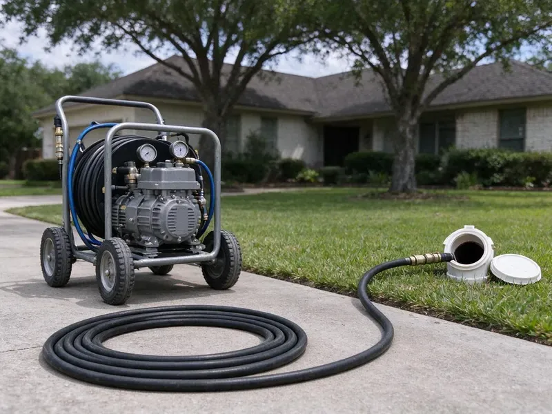

Hydro Jetting in Bloomington, MN
Years of grease and scale in Bloomington, MN pipes come out with high-pressure water, no chemicals needed.
- Pipe-Safe Pressure Settings
- Residential and Commercial Units
- Removes Heavy Buildup
- Camera Inspection Before Jetting

Get the Whole Pipe Scoured in Bloomington, MN
Grease line clogging every few months? Call (612) 712-9569 and we will scour it back to full size.
High-Pressure Hydro Jetting in Bloomington, MN That Cleans the Whole Pipe
CNV Plumbing runs a camera before every jetting job. It tells us how hard to push. Knowing the pipe material and condition lets us choose a nozzle and a pressure that clean well without harming older cast iron, clay or thin-walled pipe.
Our expertise includes:
- Rotating, root-cutting and penetrating nozzle selection
- Scheduled maintenance jetting for restaurants
- Heavy grease and root removal

Additional Drain Services Services in Bloomington, MN
From stubborn kitchen clogs to main sewer backups, our drain services in Bloomington, MN clear the line and keep it clear with camera-verified results.


Customers
Why Choose CNV Plumbing for Hydro Jetting in Bloomington, MN?
Buildup causes repeat clogs. Clean walls catch less. By removing the layer that traps debris, jetting means fewer emergency calls and less wear on the line.
- Root Cutting, Root-cutting nozzles cut through fine roots and flush them out of the sewer.
- Water Only, Nothing but water goes into the pipe, so there are no harsh chemicals to eat at older lines.
- Full-Wall Clean, Jetting cleans the entire pipe wall, not just a path through the clog.
Citywide Coverage
Every neighborhood in Bloomington gets jetting service from CNV Plumbing. Aging pipe and new pipe alike. From older areas with cast iron and clay to newer developments with PVC, we bring the right jetter and nozzle for the pipe under each home.
Experienced Team
Licensed plumbers run our jetting jobs. Inspection comes before jetting. Every tech is trained to read pipe condition on camera before setting the jetter, which matters with the mix of pipe materials found in local homes.
Safety-First Approach
Jetting follows local plumbing codes in Bloomington, MN. Best practices too. Code and safety practice guide every step, which protects your home and our crew alike.
Trusted Certified Bloomington Plumbing Services Professionals
At CNV Plumbing, we are proud to offer certified plumbing services throughout Bloomington, MN. Those papers on the wall mean something. Our plumbers hold recognized industry credentials, and they follow strict safety and quality rules on every repair, installation and maintenance call we run.
Call Us Now PHCC Plumbing Contractor Recognition
PHCC Plumbing Contractor Recognition Better Business Bureau (BBB) Accreditation
Better Business Bureau (BBB) Accreditation Angi Certified Pro
Angi Certified Pro ISO 9001 Quality Management Certification
ISO 9001 Quality Management CertificationHydro Jetting Work in Bloomington, MN
Scale Removal in Cast Iron Pipes in Bloomington
Cast iron grows rust tubercles. Minerals make it worse. We set the pressure for old iron, strip the buildup with a descaling nozzle and check for weak spots on camera as we go, which is also the standard prep before pipe lining.

Restaurant and Hotel Jetting in Bloomington, MN
Restaurants and hotels build grease fast. Restrooms clog too. We jet commercial kitchen and restroom lines on a schedule that keeps the building open and the drains moving.
Kitchen Line Grease Jetting in Bloomington, MN
Grease clings and hardens. Flat runs are the worst. We use smaller hose and nozzles for kitchen branches, which scrub the grease off the walls rather than tunneling through it, so your sink and dishwasher drain properly for much longer.
Hydro Jetting Before Pipe Lining in Bloomington, MN
Liners need clean pipe. Buildup keeps them from sealing. The old pipe gets jetted and inspected, and any remaining obstructions are cut out so the liner can bond and seal, since skipping prep can lead to wrinkles or poor bonding.
Large-Line Commercial Jetting in Bloomington, MN
Big buildings need trailer jetters. They push farther and harder. Restaurants, food processors, hotels and apartment complexes create heavy grease and solids loads, and we clean interceptor outlets, floor drains and main laterals on a schedule that fits your operation, with written records for inspections.
Commercial Hydro Jetting in Bloomington, MN
Commercial pipe sees heavy loads. Restaurants pour grease daily. Our commercial jetting handles larger and longer lines with more flow, clearing heavily packed laterals and keeping you clear of health code trouble and an unplanned shutdown during a busy week.
Camera Inspection and Hydro Jetting in Bloomington, MN
The camera goes in before the jetter. We never skip it. An inspection locates the blockage, shows what it is made of and tells us the condition of the pipe, so we can confirm jetting is right and choose the correct pressure and nozzle.

Scheduled Jetting for Repeat Clogs in Bloomington, MN
Recurring clogs follow a pattern. A schedule breaks it. Jetting once or twice a year keeps mineral deposits, grease and sludge from building up again, which avoids emergency blockages and extends the life of the plumbing system on properties with a history of trouble.
Hydro Jetting Near Me in Bloomington, MN
A search for hydro jetting near me usually means a clog keeps coming back. That is what jetting is for. A single visit covers the inspection, the jetting and the follow-up camera run, with footage you can keep.
A good local jetting company shows up with the right gear. We carry cart and trailer units. Our cart units reach tight spots, and trailer units handle the big commercial lines.
CNV Plumbing at a Glance
- Fully licensed plumbing team covering Bloomington, MN
- Same-day appointments and 24/7 emergency response
- Clear written estimates, no hidden fees
- 4.8-star rated by 501+ Minnesota customers
Bloomington Map
Bloomington Information
- Population
- 87,398
- Area codes
- 952/763/612
- Service area
- Bloomington and towns within a 40 mile drive
- Nearby
- Edina, Burnsville, Eden Prairie, Eagan
Ground movement in Bloomington, MN can crack buried pipe and let roots in, and scale chokes drain lines a little more every year. Glacial clay and sandy soils are both common in Minnesota, and deep frost causes the ground to heave and settle each year.
Expert Services
Reach out to CNV Plumbing for reliable plumbing work done by licensed pros in Bloomington, MN.
Our Specialized Plumbing Services in Bloomington, MN
At CNV Plumbing, you get every kind of plumbing service from one company across Bloomington, MN. From leak detection to full system installs, our team works fast and charges fair prices on homes and commercial properties alike. Take a look at our core services below:


How It Goes When We Jet a Line in Bloomington, MN
Camera first, jetter second, camera again last.
Request a Quote
Call (612) 712-9569 and tell us about the clogs you are having and how often. We schedule an inspection and give you a price range.
Inspect the Pipe
We run a camera to check pipe material, condition and the cause of the blockage. This tells us the safe pressure and the right nozzle.
Jet and Verify
We jet the line in passes until the walls are clean and the water runs clear. A final camera run verifies the result.
Frequently Asked Questions About Hydro Jetting in Bloomington
Expect $300 to $800 in Bloomington. The clog drives the cost. Pipe length, diameter and whether a camera inspection is needed all affect the total, and long commercial lines or extensive roots land at the higher end, with a written estimate before work.
Gorlitz, Spartan Tool and MyTana. These are field-tested brands. Each one is known for reliability and power on tough drain and sewer blockages, so customers get a thorough cleaning every time.
Almost all of them. Grease and scale are its specialty. Jetting breaks through roots, flushes heavy grease and food waste, strips mineral scale and removes compacted sludge that a cable usually leaves on the pipe walls.
Yes, we guarantee our jetting work in writing. Pipe condition sets the term.
Spartan Tool and MyTana jetters. These are professional machines. We run these brands because they hold up day after day and give us the right pressure and flow for each job.
We use professional cart and trailer jetters along with rotating and root-cutting nozzles from well-known manufacturers. Color camera systems record the line before and after.
Every 1 to 3 years for most homes. Restaurants need it more often. Homes with recurring clogs or older pipe benefit from a regular schedule, while restaurants may need quarterly or twice-yearly jetting to keep grease under control.
Buildup responds best. Coatings on the pipe wall. Jetting also handles hair, soap and root hairs, because it cleans the full circumference of the pipe.
What People Are Saying About Our Plumbing Experts?

Paul B.
Our pit pump ran nonstop even in dry weather. The plumber found the check valve was stuck open, so the same water kept cycling back into the pit. New valve, new float switch, done in an hour. It runs quiet now.
Sump Pump · Burnsville, MN
Angela D.
Our sump pump quit during a storm and the water was an inch from the basement carpet. CNV Plumbing put in a new pump with a battery backup that same evening. We have had two heavy rains since. It kicked on both times.
Sump Pump · Eden Prairie, MN
Lisa C.
Water was pouring out from under the washing machine on a holiday weekend. CNV Plumbing talked me through closing the valves over the phone and had a plumber at the house within ninety minutes. It was a burst fill hose.
Emergency Plumbing · Edina, MN
Robert G.
The camera showed a full break in our clay sewer line near the street. CNV Plumbing replaced it with a trenchless pipe burst, so the only digging was two small pits in the yard. They let us watch the footage before and after.
Sewer Line Replacement · Edina, MNKevin O.
Before buying our house I paid for a sewer camera inspection. CNV Plumbing found a belly in the line that held standing water about forty feet from the cleanout. We used the video to get the sellers to fix it before closing.
Sewer Camera Inspection · St. Louis Park, MN
Laura S.
Our 40 gallon tank started leaking from the bottom after thirteen years. The tech hauled the old one out, set a new unit with a fresh expansion tank, and had hot water running in about four hours. He took the old tank with him too.
Water Heater Replacement · Burnsville, MN